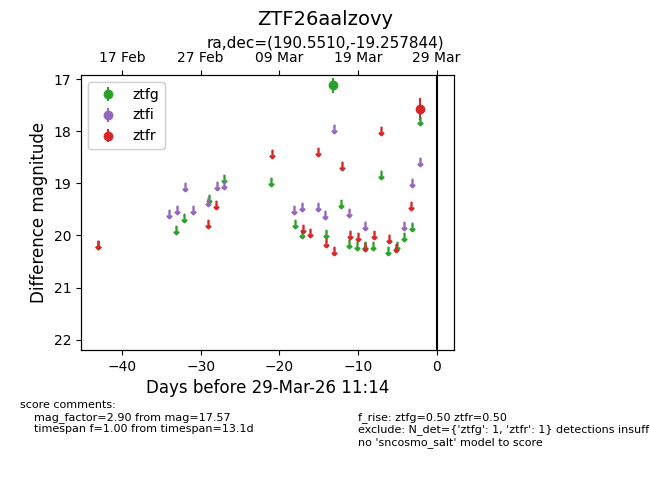
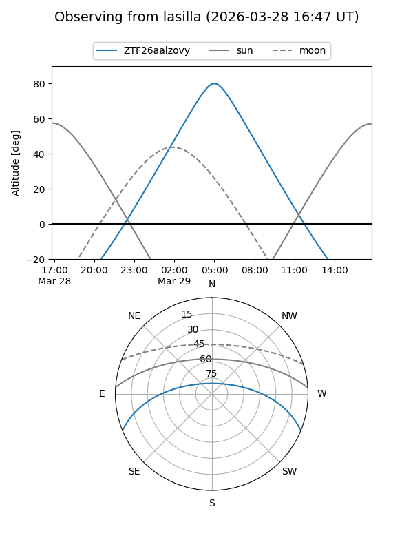
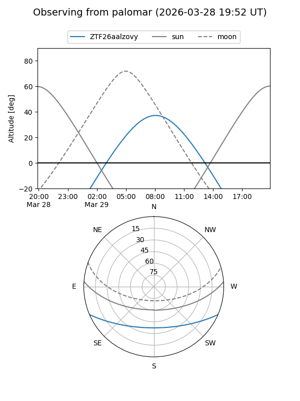

ZTF26aalzovy
Target ZTF26aalzovy at 2026-03-29 11:17
Aliases and brokers:
FINK: link
Lasair: link
ALeRCE: link
alt names
ZTF26aalzovy (ztf,fink_ztf)
Coordinates:
equatorial (ra, dec) = 190.5510,-19.25784
equatorial (HMS+DMS) = 12:42:12.24,-19:15:28.24
galactic (l, b) = (299.9240,+43.55997)
Flags:
Photometry:
last ztfg=17.12, ztfr=17.57
1 ztfg, 1 ztfr detections
Lightcurve

Visibility


Additional plots